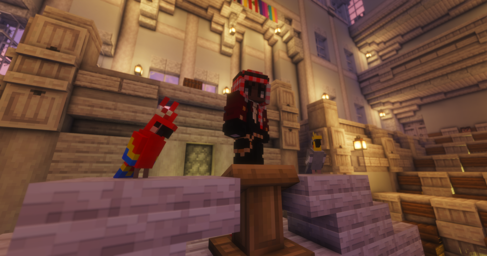
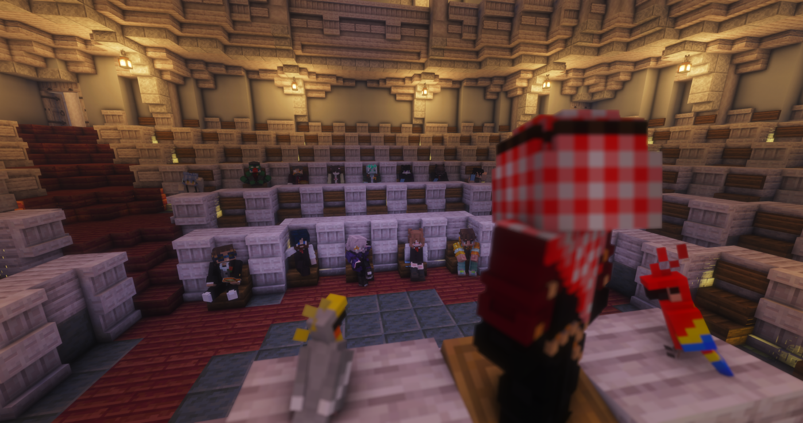

« Nous sommes en guerre » : Karminéa se dresse contre Rinesthia
Devant le Conseil réuni et les habitants rassemblés, le président Januk a prononcé le discours que Karminéa redoutait — et attendait. Les accords avec le royaume de Rinesthia sont rompus, les masques tombent : derrière les enlèvements, les tortures et les attaques de ces dernières semaines, un seul ennemi. La guerre est déclarée.

📷 Le président Januk au pupitre du Conseil — flanqué de Kiki et Koko, fidèles au poste jusque dans les heures les plus graves
Le silence était total dans l'hémicycle. Convoqués en urgence, le Conseil et les habitants de Karminéa savaient que ce qui allait se dire ce soir-là changerait le destin du pays. Le président Januk est monté au pupitre, le regard grave. Quelques minutes plus tard, le mot était lâché — celui qu'aucun président n'avait jamais eu à prononcer : guerre.
📜 Des accords rompus dans le sang
Le président l'a confirmé d'entrée : les accords qui liaient Karminéa au royaume de Rinesthia ont volé en éclats dès le lendemain de l'attaque du parlement, la semaine dernière. Ce que beaucoup soupçonnaient est désormais officiel — derrière les exactions attribuées jusqu'ici aux mystérieux Hommes en Noir se dresse une puissance organisée, et elle a un nom.
🖤 La liste des victimes
D'une voix contenue, Januk a égrené les noms de ceux qui ont payé le prix des dernières semaines. Une litanie insoutenable :
🙏 Le mea culpa du président
Moment rare : avant d'appeler aux armes, Januk s'est excusé. Il a reconnu avoir longtemps cru qu'une issue pacifique était possible, qu'on pouvait régler cette crise « sans faire couler le sang ». Il a admis, devant le pays tout entier, s'être trompé. « Ces hommes s'en sont pris à nos amis, nos familles — à nous, habitants de Karminéa », a-t-il martelé, avant de conclure que rester les bras croisés n'était plus une option.
Notre ennemi est Rinesthia.
Prononcé par le président Januk devant le Conseil et les habitants de Karminéa réunis — Juillet 2026
🛡️ L'appel à la mobilisation
Le président n'a pas éludé le sujet qui fâche : le service militaire, instauré après les premières attaques, n'a mobilisé qu'une poignée de volontaires. Alors il a posé la question qui a fait frissonner l'assemblée — le courage aurait-il déserté le cœur des citoyens de Karminéa ? « Je ne veux pas le croire », a-t-il lancé, appelant chacun à se lever pour défendre le pays.
« Ils pensent que nous sommes déjà morts. Ils croient que la peur a glacé notre sang. Mais ils ne savent pas qui nous sommes ! »— Januk, président de Karminéa
La fin du discours restera dans les mémoires. Sans rien cacher du prix à payer — « certains d'entre nous ne verront pas le coucher du soleil » —, le président a opposé à la peur une conviction simple : mieux vaut tomber les armes à la main que vivre à genoux.
« La mort n'est rien face à la honte de la soumission. Que l'ennemi entende le bruit d'un peuple qui refuse de mourir à genoux ! »— Januk, président de Karminéa

📷 Face au président : les habitants de Karminéa, venus en nombre écouter le discours
⏭️ Et maintenant ?
L'hémicycle s'est levé d'un bloc. Le cri final du président — « W KARMINÉA ! » — a été repris par l'assemblée entière, boucliers levés. Karminéa entre officiellement en guerre contre Rinesthia. Les modalités de la mobilisation, l'organisation de la défense et les prochaines étapes seront communiquées dans les jours à venir. Le Karmine Déchaîné, fidèle à son poste, couvrira ce conflit sans rien céder de sa liberté. Vérité, courage, encre — plus que jamais.